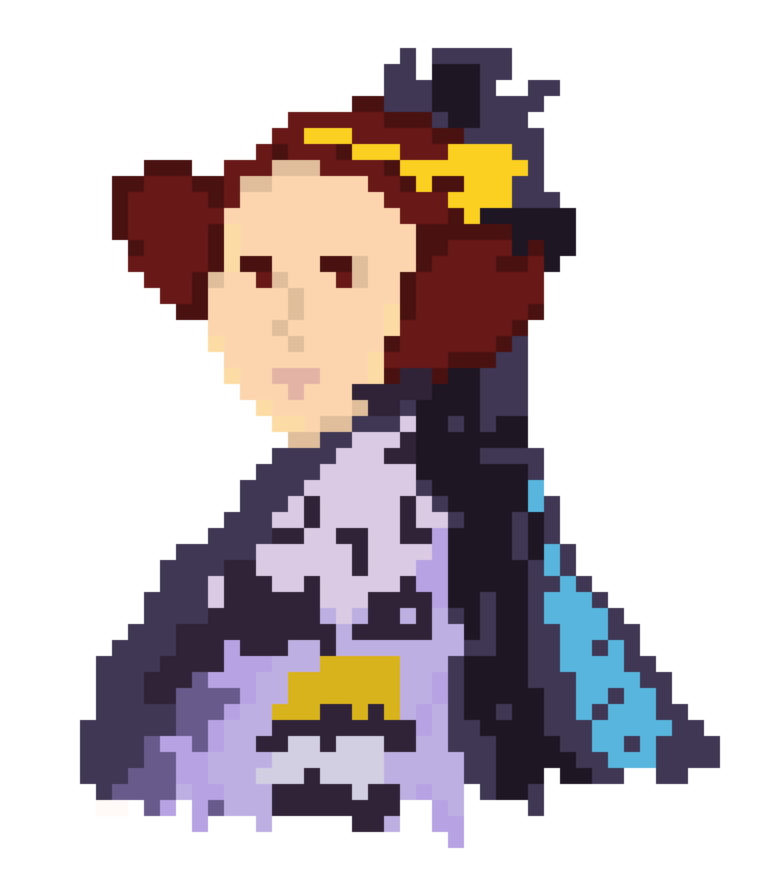

BCSWomen Lovelace Colloquium

Poster abstract deadline · 7 Feb 2027
Colloquium 2027 · 8 Apr, Birmingham
This year's event
Lovelace 2027 will be hosted in Birmingham. Registration, the call for poster abstracts, and the full programme will appear here as the day gets closer.
For students
Free to attend, with travel and accommodation covered for everyone whose poster abstract is accepted. Come and share your work, hear talks from women in academia and industry, and meet students from across the UK.
For lecturers & departments
Encourage your students to submit a poster, put your department forward to host a future Colloquium, or become a University partner pledging to cover your own students' travel.
For companies & donors
Sponsorship is what keeps the day free and lets us cover student travel, accommodation and poster prizes. Sponsor tiers cover the headline slot, lunch, prizes and socials.
Since 2008
Named after Ada Lovelace, this free one-day conference for women and non-binary computing students has moved around the UK every year since 2008.